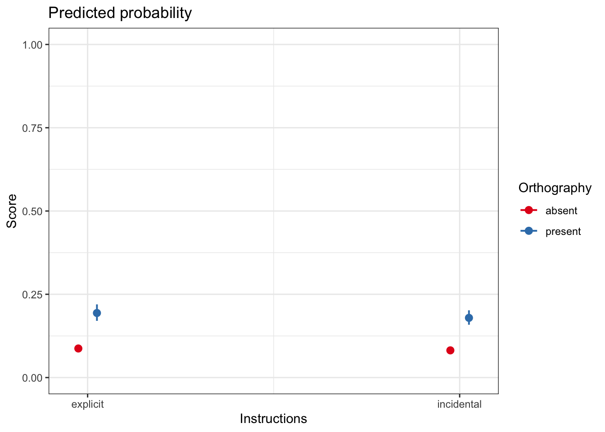

Week 19. Workbook introduction to Generalized Linear Mixed-effects Models
Written by Rob Davies
Week 19 Introduction to Generalized Linear Mixed-effects Models
Welcome to your overview of the work we will do together in Week 19.
We extend our understanding and skills by moving to examine data where the outcome variable is categorical: this is a context that requires the use of Generalized Linear Mixed-effects Models (GLMMs).
Important
Categorical outcomes cannot be analyzed using linear models, in whatever form, without having to make some important compromises.
You need to do something about the categorical nature of the outcome.
Targets
Here, we look at Generalized Linear Mixed-effects Models (GLMMs): we can use these models to analyze outcome variables of different kinds, including outcome variables like response accuracy that are coded using discrete categories (e.g. correct vs. incorrect).
Practice running GLMMs with varying random effects structures.
Practice reporting the results of GLMMs, including through the use of model plots.
Learning resources
You will see, next, the lectures we share to explain the concepts you will learn about, and the practical data analysis skills you will develop. Then you will see information about the practical materials you can use to build and practise your skills.
Every week, you will learn best if you first watch the lectures then do the practical exercises.
This workbook introduction on Generalized Linear Mixed-effects Models (GLMMs) is linked to the corresponding chapter where the explanation of ideas or of practical analysis steps is set out more extensively or in more depth.
Lectures
The lecture materials for this week are presented in three short parts.
Click on a link and your browser should open a tab showing the Panopto video for the lecture part.
Part 1 (20 minutes): Understand the reasons for using Generalized Linear Mixed-effects Models (GLMMs); categorical outcomes like response accuracy and the bad compromises involved in (traditional methods) not using GLMMs to analyze them; understanding what the generalized part of this involves.
Part 2 (16 minutes): The questions, design and methods of the working data example study; category coding practicalities; specifying a GLMM appropriate to the design; the GLMM results summary, reading the results, visualizing the results.
Part 3 (19 minutes): What random effects should we include; recognizing when a model has got into trouble, and what to do about it; general approaches to model specification; reporting model results.
Lecture slides
Download the lecture slides
You can download the lecture slides in two different versions:
The GLMM.pdf version is the version delivered for the lecture recordings. To make the slides easier to download, I produced a six-slide-per-page version, GLMM_6pp.pdf. This should be easier to download and print out if that is what you want to do.
Practical materials: data and R-Studio
We will be working with data collected for a study investigating word learning in children, reported by Ricketts et al. (2021). You will see that the study design has both a repeated measures aspect because each child is asked to respond to multiple stimuli, and a longitudinal aspect because responses are recorded at two time points. Because responses were observed to multiple stimuli for each child, and because responses were recorded at multiple time points, the data have a multilevel structure. These features require the use of mixed-effects models for analysis.
We will see, also, that the study involves the factorial manipulation of learning conditions. This means that, when you see the description of the study design, you will see embedded in it a 2 x 2 factorial design. You will be able to generalize from our work here to many other research contexts where psychologists conduct experiments in which conditions are manipulated according to a factorial design.
However, our focus now is on the fact that the outcome for analysis is the accuracy of the responses made by children to word targets in a spelling task. The categorical nature of accuracy as an outcome is the reason why we now turn to use Generalized Linear Mixed-effects Models.
We addressed three research questions and tested predictions in relation to each question.
Does the presence of orthography promote greater word learning?
We predicted that children would demonstrate greater orthographic learning for words that they had seen (orthography present condition) versus not seen (orthography absent condition).
Will orthographic facilitation be greater when the presence of orthography is emphasized explicitly during teaching?
We expected to observe an interaction between instructions and orthography, with the highest levels of learning when the orthography present condition was combined with explicit instructions.
Does word consistency moderate the orthographic facilitation effect?
For orthographic learning, we expected that the presence of orthography might be particularly beneficial for words with higher spelling-sound consistency, with learning highest when children saw and heard the word, and these codes provided overlapping information.
Important
Get the data: get the data file and the .R script you can use to do the exercises that will support your learning.
You can download the files folder for this chapter by clicking on the link 04-glmm.zip.
The practical materials folder includes data files and an .R script:
In this chapter, we will be working with the data about the orthographic post-test outcome for the Ricketts word learning study:
long.orth_2020-08-11.csv
The data file is collected together with the .R script:
04-glmm-workbook.R the workbook you will need to do the practical exercises.
The data come from the Ricketts et al. (2021) study, and you can access the analysis code and data for that study, in full, at the OSF repository here
You can see, here, that within the read_csv() function call, I specify col_types, instructing R how to treat a number of different variables.
You can read more about this convenient way to control the read-in process here.
Practical Part 3: Tidy the data
The data are already tidy: each column in long.orth_2020-08-11.csv corresponds to a variable and each row corresponds to an observation. However, we need to do a bit of work, before we can run any analyses, to fix the coding of the categorical predictor (or independent) variables: the factors Orthography, Instructions, and Time.
Practical Task 3 – Inspect the data
It is always a good to inspect what you have got when you read a data file in to R.
Code
summary(long.orth)
You will see that some of the variables included in the .csv file are listed, following, with information about value coding or calculation.
Participant – Participant identity codes were used to anonymize participation.
Time – Test time was coded 1 (time 1) or 2 (time 2). For the Study 1 longitudinal data, it can be seen that each participant identity code is associated with observations taken at test times 1 and 2.
Instructions – Variable coding for whether participants undertook training in the explicit} or incidental} conditions.
Word – Letter string values showing the words presented as stimuli to the children.
Orthography – Variable coding for whether participants had seen a word in training in the orthography absent or present conditions.
Consistency-H – Calculated orthography-to-phonology consistency value for each word. -zConsistency-H – Standardized Consistency H scores
Score – Outcome variable – for the orthographic post-test, responses were scored as 1 (correct, if the target spelling was produced in full) or 0 (incorrect, if the target spelling was not produced).
The summary will show you that we have a number of other variables available, including measures of individual differences in reading or reading-related abilities or knowledge, but we do not need to pay attention to them, for our exercises.
Pract.Q.1. Look at the summaries for the variables Time, Instructions and Orthography. Assuming that the read_csv() action did what was required, you will see how R presents factor summaries by default. What do the variable summaries tell you about the factor level coding, and the number of observations in each level?
Hint
For a factor like Orthography, the column values code for whether the observations in a data row are associated with the condition absent or the condition present.
It is simpler to talk about absent or present as being levels of Orthography condition.
You can ask R what the levels of a factor are using: levels(long.orth$Orthography)
Pract.A.1. The summary shows:
Time (1, 655; 2, 608); Instructions (explicit, 592; incidental, 671); and Orthography (absent, 631; present, 632).
Pract.Q.2. Are there any surprises in the summary of factors?
Hint
We would hope to see equal numbers of observations at different levels for a factor.
Pract.A.2. It should be surprising that we do not have equal numbers of observations.
Practical Task 4 – Fit a Generalized Linear Model
Fit a simple Generalized Linear Model with outcome (accuracy of response) Score, and Instructions as the predictor.
Note that you are ignoring random effects, for this task.
Code
summary(glm(Score ~ Instructions, family ="binomial", data = long.orth))
Pract.Q.3. What is the estimated effect of Instructions on Score?
Pract.A.3. The estimate is: Instructionsincidental -0.05932
Pract.Q.4. Can you briefly explain in words what the estimate says about how log odds Score (response correct vs. incorrect) changes in association with different Instructions conditions?
Pract.A.4. We can say, simply, that the log odds that a response would be correct were lower in the incidental compared to the explicitInstructions condition.
This task and these questions are designed to alert you to the challenges involved in estimating the effect of categorical variables, and of interpreting the effects estimates.
Tip
This model (and default coding) gives us an estimate of how the log odds of a child getting a response correct changes if we compare the responses in the explicit condition (here, treated as the baseline or reference level) with responses in the incidental condition.
R tells us about the estimate by adding the name of the factor level that is not the reference level, here, incidental to the name of the variable Instructions whose effect is being estimated.
Practical Task 5 – Use the {memisc} library and recode the factors, to use contrast sum (effect) coding
However, it is better not to use R’s default dummy coding scheme if we are analyzing data, where the data come from a study involving two or more factors, and we want to estimate not just the main effects of the factors but also the effect of the interaction between the factors.
In our analyses, we want the coding that allows us to get estimates of the main effects of factors, and of the interaction effects, somewhat like what we would get from an ANOVA. This requires us to use effect coding.
Hint
We can code whether a response was recorded in the absent or present condition using numbers. In dummy coding, for any observation, we would use a column of zeroes or ones to code condition: i.e., absent (0) or present (1). In effect coding, for any observation, we would use a column of ones or minus ones to code condition: i.e., absent (-1) or present (1). (With a factor with more than two levels, we would use more than one column to do the coding: the number of columns we would use would equal the number of factor condition levels minus one.) In effect coding, observations coded -1 are in the reference level.
With effect coding, the constant (i.e., the intercept for our model) is equal to the grand mean of all the observed responses. And the coefficient of each of the effect variables is equal to the difference between the mean of the group coded 1 and the grand mean.
You can read more about effect coding here or here.
We follow recommendations to use sum contrast coding for the experimental factors. Further, to make interpretation easier, we want the coding to work so that for both Orthography and Instructions conditions, doing something is the “high” level in the factor – hence:
Orthography, absent (-1) vs. present (+1)
Instructions, incidental (-1) vs. explicit (+1)
Time, test time 1 (-1) vs. time 2 (+1)
We use a modified version of the contr.sum() function (provided in the {memisc} library) that allows us to define the base or reference level for the factor manually (see documentation).
We need to start by loading the {memisc} library.
library(memisc)
In some circumstances, this can create warnings.
You can see information about the potential warnings here.
Pract.Q.5. Can you work out how to use the contr.sum() function to change the coding of the categorical variables (factors) in the example data-set from dummy to effects coding?
It would be sensible to examine how R sees the coding of the different levels for each factor, before and then after you use contr.sum() to use that coding.
Code
In the following sequence, I first check how R codes the levels of each factor by default, I then change the coding, and check that the change gets me what I want.
We want effects coding for the orthography condition factor, with orthography condition coded as -1, +1. Check the coding.
contrasts(long.orth$Orthography)
present
absent 0
present 1
You can see that Orthography condition is initially coded, by default, using dummy coding: absent (0); present (1). We want to change the coding, then check that we have got what we want.
contrasts(long.orth$Orthography) <-contr.sum(2, base =1)contrasts(long.orth$Orthography)
2
absent -1
present 1
We want effects coding for the Instructions condition factor, with Instructions condition coded as -1, +1. Check the coding.
contrasts(long.orth$Instructions)
incidental
explicit 0
incidental 1
Change it.
contrasts(long.orth$Instructions) <-contr.sum(2, base =2)contrasts(long.orth$Instructions)
1
explicit 1
incidental -1
We want effects coding for the Time factor, with Time coded as -1, +1 Check the coding.
contrasts(long.orth$Time)
2
1 0
2 1
Change it.
contrasts(long.orth$Time) <-contr.sum(2, base =1)contrasts(long.orth$Time)
2
1 -1
2 1
In these chunks of code, I use contr.sum(a, base = b) to do the coding, where a is the number of levels in a factor (replace a with the right number), and b tells R which level to use as the baseline or reference level (replace b with the right number). I usually need to check the coding before and after I specify it.
Pract.Q.6. Experiment: what happens if you change the first number for one of the factors?
Run the following code example, and reflect on what you see:
contrasts(long.orth$Time) <-contr.sum(3, base =1)contrasts(long.orth$Time)
Pract.A.6. Changing the first number from 2 will result in warnings, showing that the number must match the number of factor levels for the factor.
Pract.Q.7. Experiment: what happens if you change the base number for one of the factors?
Run the following code example, and reflect on what you see:
contrasts(long.orth$Time) <-contr.sum(2, base =1)contrasts(long.orth$Time)
Pract.A.7. Changing the base number changes which level gets coded as -1 vs. 1.
Practical Part 4: Analyze the data: random intercepts
Practical Task 6 – Take a quick look at a random intercepts model
Specify a model with:
The correct function
Outcome = Score
Predictors including:
Time + Orthography + Instructions + zConsistency_H +
Orthography:Instructions +
Orthography:zConsistency_H +
Plus random effects:
Random effect of participants (Participant) on intercepts
Random effect of items (Word) on intercepts
Using the "bobyqa" optimizer
Run the code to fit the model and get a summary of results.
Pract.Q.8. Experiment: replace the fixed effects with another variable e.g. mean_z_read (an aggregate measure of reading skill) to get a feel for how the code works.
Generalized linear mixed model fit by maximum likelihood (Laplace
Approximation) [glmerMod]
Family: binomial ( logit )
Formula: Score ~ mean_z_read + (1 | Participant) + (1 | Word)
Data: long.orth
Control: glmerControl(optimizer = "bobyqa", optCtrl = list(maxfun = 2e+05))
AIC BIC logLik -2*log(L) df.resid
1000.4 1021.0 -496.2 992.4 1259
Scaled residuals:
Min 1Q Median 3Q Max
-6.1454 -0.4180 -0.2111 0.2543 7.3457
Random effects:
Groups Name Variance Std.Dev.
Participant (Intercept) 0.1363 0.3692
Word (Intercept) 2.3481 1.5324
Number of obs: 1263, groups: Participant, 41; Word, 16
Fixed effects:
Estimate Std. Error z value Pr(>|z|)
(Intercept) -1.7967 0.4027 -4.461 8.14e-06 ***
mean_z_read 1.5090 0.1522 9.913 < 2e-16 ***
---
Signif. codes: 0 '***' 0.001 '**' 0.01 '*' 0.05 '.' 0.1 ' ' 1
Correlation of Fixed Effects:
(Intr)
mean_z_read -0.121
Pract.A.8. The estimate is: mean_z_read 1.5090
Pract.Q.9. Can you briefly indicate in words what the estimate says about how log odds Score (response correct vs. incorrect) changes in association with mean_z_read score?
Pract.A.9. We can say, simply, that log odds that a response would be correct were higher for increasing values of mean_z_read.
Practical Task 7 – Visualize the significant effects of the Orthography and Consistency factors
You are calculating adjusted predictions on the population-level (i.e.
`type = "fixed"`) for a *generalized* linear mixed model.
This may produce biased estimates due to Jensen's inequality. Consider
setting `bias_correction = TRUE` to correct for this bias.
See also the documentation of the `bias_correction` argument.
Scale for y is already present.
Adding another scale for y, which will replace the existing scale.
Scale for y is already present.
Adding another scale for y, which will replace the existing scale.
Ignoring unknown labels:
• linetype : "Orthography"
• shape : "Orthography"

Practical Part 5: Analyze the data: model comparisons
Practical Task 10 – We are now going to fit a series of models and evaluate their relative fit
Note that the models all have the same fixed effects.
Note also that while we will be comparing models varying in random effects we are not going to use REML=TRUE
Ricketts, J., Dawson, N., & Davies, R. (2021). The hidden depths of new word knowledge: Using graded measures of orthographic and semantic learning to measure vocabulary acquisition. Learning and Instruction, 74, 101468. https://doi.org/10.1016/j.learninstruc.2021.101468